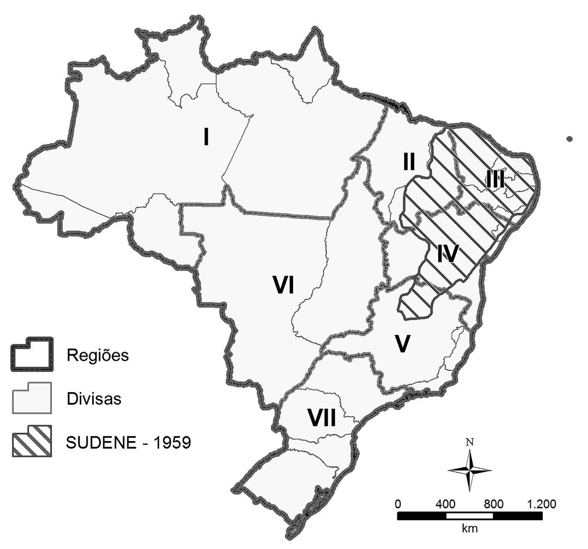

Introdução
O modelo clássico das políticas regionais foi moldado a partir dos anos 1950, com a criação da Superintendência do Desenvolvimento do Nordeste (Sudene), e normalmen-te é mais debatido pelos estudos sobre políticas públicas de cunho regional no Brasil.(2020, p. 57)
Criação da SUDENE
Segundo o relatório do GTDN de 1959 (Furtado, 2009b), o problema do Nordeste era dado pela concentração fundiária secular na região, o que criou uma economia de subsistência, com baixa produtividade e baixa industrialização, levando a uma exacerbação das desigualdades regionais com o Centro-Sul. Enquanto esta região se tornava industrial, o Nordeste ainda estava preso às antigas elites agroexportadoras.(2020, p. 57)
Mesmo com tais características, a economia de subsistência nordestina havia criado um excedente de mão de obra, que poderia ser distribuída pela região nas iniciativas de desenvolvimento. O plano de ação do GTDN mirava no aumento da produtividade rural, com um melhor aproveitamento dos solos do semiárido, na abertura de frentes de colonização, a exemplo do Maranhão, na intensificação tecnológica e na industrialização. O objetivo era aumentar a produção, fornecer alimentos para as áreas litorâneas e formar uma massa de consumidores no interior da região, bem como, ao mesmo tempo, quebrar com a concentração de terras e o coronelismo, que perpetuavam a economia de subsistência (Furtado, 2009b).(2020, p. 58)
Ainda que a interpretação sobre o problema das secas tenha ganhado um viés econômico e político, transformando-se num debate sobre o desenvolvimento regional e nacional, a Sudene atuaria praticamente na mesma área do polígono das secas, segundo a delimitação estabelecida em 1952, conforme exibem os mapas 13 e 14.(2020, p. 58)

Do mesmo modo, a Cepal teve um papel fundamental na formulação teórica para o desenvolvimento nacional e regional. Grosso modo, para Prebisch (2000), países periféricos, como na América Latina, se especializavam em matérias-primas de baixo valor agregado, enquanto os países centrais, em produtos industriais de maior valor. A teoria tradicional de comércio exterior (lei das vantagens comparativas de David Ricardo) propunha que, ao longo do tempo, a diferença de progresso técnico diminuiria, pois os países se especializariam, aumentando a produtividade e a oferta, reduzindo os preços e beneficiando a todos. Porém, para os “cepalinos”, isso não ocorria, e as desigualdades de preços só aumentavam, prejudicando os países periféricos, o que reproduzia e fazia crescer ainda mais as relações desiguais. Portanto, para dirimir esse hiato, a solução seria a industrialização da periferia, com a participação ativa do Estado.(2020, p. 61)
O principal instrumento para o desenvolvimento do Nordeste não seria a ação direta do Estado por investimentos públicos, que seriam complementares, mas os subsídios às empresas que realizassem investimentos produtivos. São Paulo era o centro industrial do país; então era necessário atrair investimentos, em um processo de desconcentração produtiva, para reduzir os desequilíbrios regionais. Para tanto, foram criados incentivos fiscais e financeiros.(2020, p. 62)
A construção da política de desenvolvimento regional brasileira teve grande influência de Celso Furtado, que foi superintendente da Sudene entre 1959 e 1964, porém, com o golpe militar de 1964, alguns aspectos foram consolidados e outros, esquecidos. Segundo Bercovici (2003, p. 133) “(…) a industrialização regional se tornou o novo eixo da nova política de desenvolvimento, mas totalmente desvinculada de reformas sociais”.(2020, pp. 63–64)
O Modelo Reproduzido e Modificado no Regime Militar
O modelo de superintendências foi reproduzido para outras macrorregiões de forma relativamente homogênea entre 1966 e 1967, constituindo uma verdadeira “sopa de letras” no Estado. Novas instituições regionais foram criadas, como a Superintendência da Zona Franca de Manaus (Suframa), para a parte ocidental da Amazônia, e instituições pré-existentes foram modificadas(2020, p. 64)
O período militar foi marcado pela centralização das decisões no Poder Exe-cutivo federal, que alterou a estrutura da administração pública a fim de ter maior controle político e financeiro sobre as instituições. Nesse contexto, as instituições voltadas ao desenvolvimento regional foram vinculadas, num primeiro momento, ao Ministério Extraordinário para Coordenação dos Organismos Regionais, criado em 1964, transformado posteriormente em Ministério do Interior, em 1967.(2020, p. 69)
Com essas alterações, as instituições voltadas ao desenvolvimento regional perderam parte de sua autonomia política e administrativa, assinala Silva (2014, p. 92-93). As superintendências possuíam significativos recursos orçamentários para aplicação, além de incentivos fiscais e financeiros para atração de investimentos privados, o que atraía o interesse dos governadores e empresários para as suas decisões. Contudo, por manterem-se responsáveis pela coordenação das políticas federais nas suas respectivas áreas geográficas de abrangência e por gerir a aplica-ção dos recursos financeiros, as superintendências dispunham de certo poder ante estados e municípios, suscitando a ideia de que as regiões poderiam se tornar um novo ente federado (Bonavides, 1980, p. 121).(2020, p. 70)
O Planejamento Regional nos Planos Nacionais de Desenvolvimento
Se, por um lado, os planos diretores das superintendências deixaram de ser elabo-rados fundamentalmente no âmbito dos respectivos conselhos deliberativos, em consonância com os interesses dos governos estaduais, por outro lado, eles se tor-naram capítulos de planos econômicos nacionais. Nos anos 1970, foram realizados três planos nacionais de desenvolvimento (PNDs), nos quais as “regiões-problema” tinham funções específicas, considerando-se uma estratégia mais ampla para o país.(2020, p. 70)
Manteve-se em destaque a questão da integração nacional e surgiram aponta-mentos sobre a necessidade de criar “polos de desenvolvimento”.3 A esse respeito, foram incorporadas ao planejamento governamental outras teorias sobre o desen-volvimento regional, especialmente aquelas formuladas por Perroux, por Myrdal e por Hirschmann. Em Mantega (1984) são mostradas essas vertentes, sendo que Perroux teria se baseado nos polos de crescimento, nos quais investimentos estratégicos concentrados em polos atrairiam indústrias complementares, que se interligariam e contribuiriam para o desenvolvimento da região. Para Myrdal, deveria haver uma causação circular cumulativa, em que o crescimento das regiões desenvolvidas causaria efeitos propulsores para as regiões periféricas, de forma co-nectada e complementar. Para Hirschmann, a escolha dos setores era fundamental, pois a seleção das indústrias com maiores efeitos para frente e para trás seria mais benéfico para a ampliação da renda.(2020, p. 71)
No entanto, embora as teorias de Perroux, de Myrdal e de Hirschmann se referissem ao setor industrial, como ressalta Bomfim (2007, p. 175), o uso do con-ceito de polos de desenvolvimento no Brasil nem sempre se associava à indústria como “atividade motriz”, havendo também programas regionais de polos agrícolas.(2020, p. 72)
A modernização da agropecuária ganhou destaque, especialmente no Nor-deste e Centro-Oeste, e a Amazônia se transformou na fronteira de expansão. Rica em minérios e com um vasto terreno para explorar, a sua integração passou a ser fundamental para: consolidar interesses geopolíticos do Estado na região, e não apenas de integração de mercados (Becker, 1982); avançar em grandes projetos hidrelétricos, de agricultura, pecuária e mineração; e acalmar interesses sobre a reforma agrária ao intensificar o PIN e o Proterra: o primeiro como estímulo para a colonização da Amazônia – “Uma terra sem homens para homens sem terra” – e o segundo para promover a melhoria da produtividade das agroindústrias instaladas nas regiões (Oliveira, 2007, p. 122-124).(2020, p. 74)
O que se destaca é que, à época, os problemas regionais foram vistos como nacionais pelo Estado, e pode-se considerar que este foi o período de amplo pla-nejamento e aplicação de recursos para as políticas econômicas de caráter nacional, com destaque para aquelas com um viés de ordenamento territorial. Embora di-versas políticas de cunho regional tenham sido concretizadas, elas permaneceram subordinadas, no âmbito político, administrativo e financeiro, aos interesses do Poder Executivo federal, pouco sensível às demandas e particularidades regionais.(2020, p. 75) # Resumo
O novo modelo nasce do trabalho do GTDN - Grupo de Trabalho para o Desenvolvimento do Nordeste - liderado por Celso Furtado em 1958. Na analise deles, o fracasso das politica anteriores na região se deu principalmente pela apropriação das elites locais do programa, dessa forma no ano seguinte é criada a SUDENE com o objetivo de superar essas barreiras. O programa seria bastante influente e o principal mecanismo de investimento federal na região, seu formato verticalizado que promovia o aporte direto de verbas seria a estratégia de enfrentar a dependencia oligarquica.
O futuro da SUDENE seria porém incerto, após o governo JK o pais passa por um grande impasse politico que só iria se estabilizar com o golpe militar de 1964. Experiências como essa serviram de inspiração para os militares criarem novas propostas para o restante do país, porém sem a mesma reflexão critica e preocupação com a pobreza e a desigualdade. Em certo aspecto, a politica foi apropriada pelo estado de excessão como mais um mecanismo de intervenção federal e na consolidação de um ordenamento territorial “de cima para baixo”. Há um apagamento das questões regionais e uma imposição do interesse nacional sobre os interesses locais.